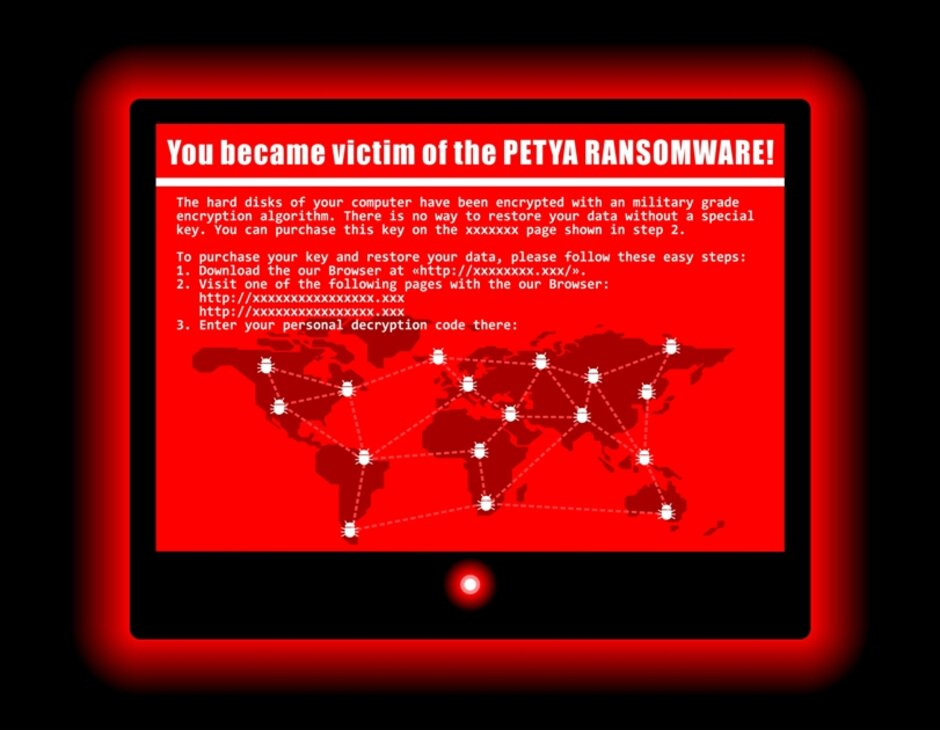

Petya Ransomeware

Definition:
Petya ransomware is a form of malware that infects Microsoft Windows-based computers. Petya was created by Janus Cybercrime Solutions. Although Petya was first discovered in 2016, it started spreading in 2017 when a new variable was used in the cyberattack against Ukrainian targets. It spread worldwide and destroyed multiple businesses. Enterprises running on Windows computers and were not up-to-date were left defenseless against this attack. Petya was initially termed as the next generation of 'Wannacry' ended to be more devastating than ever imagined. Unlike Wannacry, Petya never targeted a ransom to retrieve the data, which means the lost data can never be retrieved.